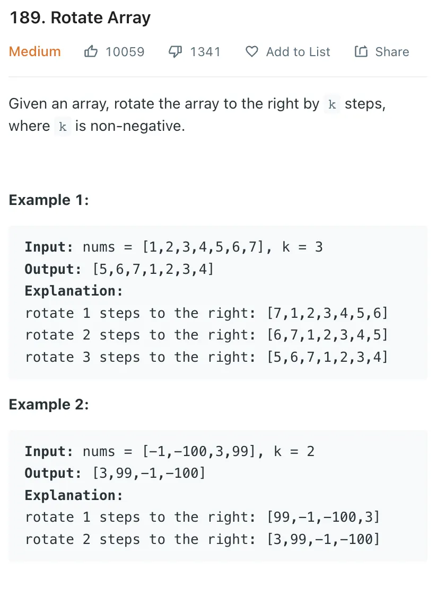
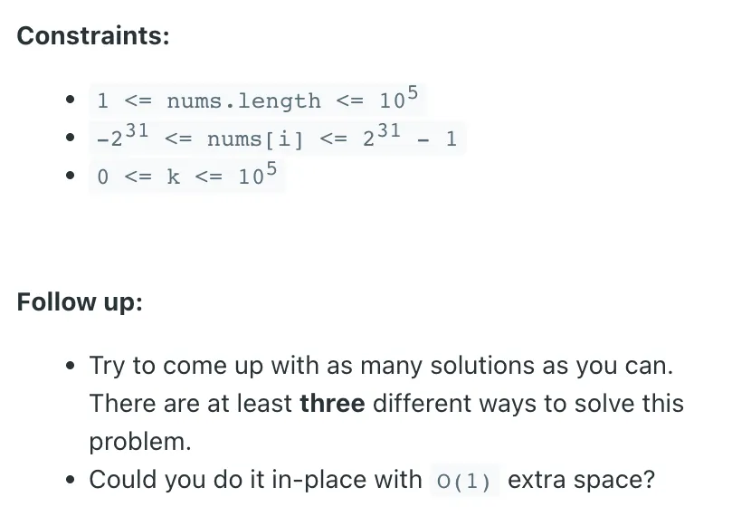

189. Rotate Array
考過的公司：Asked by: Amazon, Bytedance, Google
Question


✍🏽 My Solution
Runtime: 2 ms, faster than 48.65% of Java online submissions for Rotate Array.
Memory Usage: 64.4 MB, less than 53.91% of Java online submissions for Rotate Array.
class Solution {
public void rotate(int[] nums, int k) {
int n = nums.length;
k = k % n;
int[] res = new int[n];
for (int i = 0; i < n; i++) {
if (i < k) { // 末尾的k個複製到最前面
res[i] = nums[n-k+i];
} else { // 剩下個放去後面
res[i] = nums[i-k];
}
}
for (int i = 0; i < n; i++) {
nums[i] = res[i];
}
}
}
🧠 Thought Process
- Why did I choose this particular implementation?
- 用空間換時間，但不符合題目要求的 in-place
- What is the time/space complexity of my solution? How do I know?
- time: O(n)
- space: O(n)
- What mistakes did I make?
- 越界忘記考慮 k 比 n大的情況，必須取餘數 k = k % n;
Solution #1 [暴力解]
Time Limit Exceeded
class Solution {
public void rotate(int[] nums, int k) {
int n = nums.length;
k = k % n;
for (int i = 0; i < k; i++) {
int temp = nums[n - 1];
for (int j = n - 1; j > 0; j--) {
nums[j] = nums[j - 1];
}
nums[0] = temp;
}
}
}
Explanation (in my words)
- How does their solution work?
- 會超時
- 完全按照题目的意思，每次把末尾的元素移动到开头，当然移动前需要把所有元素后移一位，把第一个位置腾出来。
- 此外，如果
k大于数组的长度，k是等效于k % n的。举个例子，nums = [1 2 3]，k = 4，操作4次和操作4 % 3 = 1次是一样的结果。
- What is the space/time complexity of their solution?
- time: O(nk)
- space: O(1)
Solution #2 [Using Reverse]
Runtime: 1 ms, faster than 85.65% of Java online submissions for Rotate Array. Memory Usage: 65.2 MB, less than 6.13% of Java online submissions for Rotate Array.
/*
Original List : 1 2 3 4 5 6 7
After reversing all numbers : 7 6 5 4 3 2 1
After reversing first k numbers : 5 6 7 4 3 2 1
After revering last n-k numbers : 5 6 7 1 2 3 4 --> Result
*/
class Solution {
public void rotate(int[] nums, int k) {
int n = nums.length;
k = k % n;
reverse(nums, 0, n - 1);
reverse(nums, 0, k - 1);
reverse(nums, k, n - 1);
}
private void reverse(int[] nums, int left, int right) {
while (left < right) {
int temp = nums[right];
nums[right] = nums[left];
nums[left] = temp;
left++;
right--;
}
}
}
Explanation (in my words)
- How does their solution work?
- 参考 官方题解。
- 看具体的例子，
1 2 3 4 5，k = 2。转换后最终变成4 5 1 2 3。 - 其实可以分三步完成。
- 整体逆序
5 4 3 2 1。 - 前
k个再逆序4 5 3 2 1。 - 后边的再逆序
4 5 1 2 3。
- 整体逆序
- What is the space/time complexity of their solution?
- time: O(n)
- space: O(1)